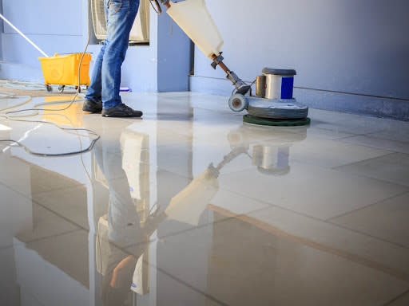
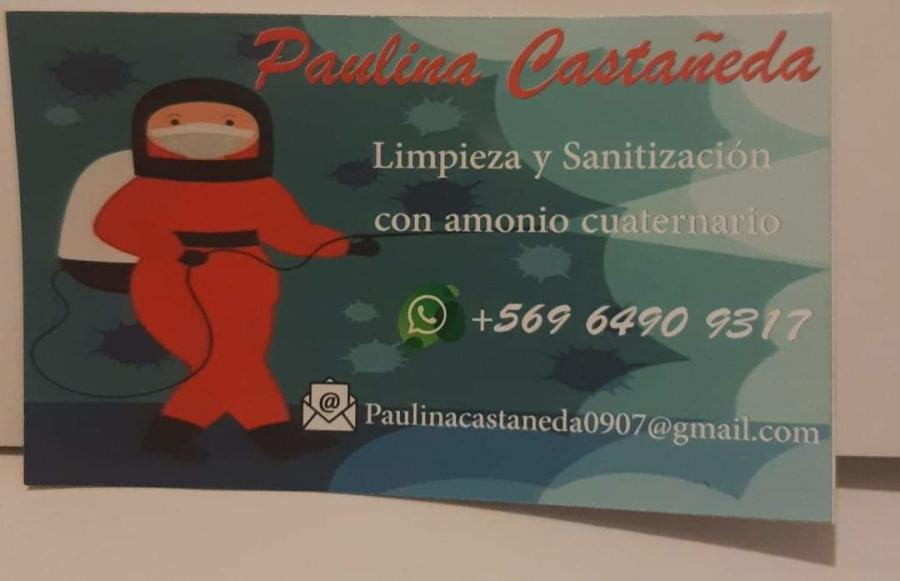

Limpieza profunda, lavado a presión, encerado de pisos y sanitización para negocios, oficinas y locales en Santiago.
Cotiza por WhatsApp
Dejamos cada zona de trabajo impecable, de punta a punta.
Para exteriores, patios y superficies que necesitan más fuerza.
Sanitización con amonio cuaternario para espacios con atención de público.
Brillo y protección para tus pisos.
Nos ocupamos de retirar y ordenar lo que sobra.
Atendemos locales y oficinas en estas comunas:
